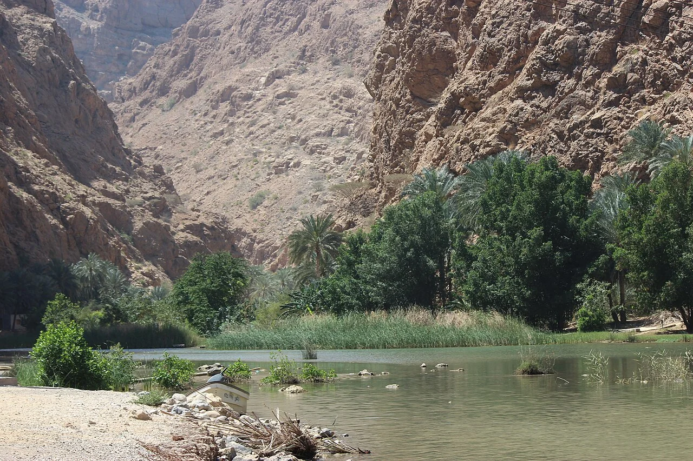

Wadi Shab — Tiwi
Tiwi, Oman · baignade

Canyon du Hajar oriental qui débouche dans le golfe d’Oman, à environ une heure de Mascate. Selon le Routard, des piscines d’eau naturelles forment un canyon au milieu des rochers, avec des palmiers au bord de l’eau. Une grotte se cache derrière une cascade, accessible seulement à la nage. Wikipédia précise qu’on peut franchir l’embouchure du wadi par la route ou en barque.
- Lieu
- Tiwi, Oman
- Niveau
- Variable selon les conditions
- Activités
- baignade
- Type d'eau
- inland
- Coordonnées
- 22.84, 59.25 (position approximative du secteur)
Dangers à connaître
- Évite d’y aller après de fortes pluies : le risque d’inondation peut être élevé (Routard).
- Il faut marcher 45 minutes à 1 heure, sur des sentiers rocheux et des zones humides, avant d’atteindre les piscines (Routard).
- La grotte derrière la cascade n’est accessible qu’en nageant (Routard).
Le conseil d'Ocean Buddy
Mets des chaussures de marche solides et des sandales aquatiques, et pars tôt le matin pour éviter la chaleur de midi (Routard).
Ouvrir dans Ocean Buddy Télécharger sur l'App Store
Source : Fiche Ocean Buddy · décembre 2026 · d’après le Routard et Wikipédia · à vérifier localement.